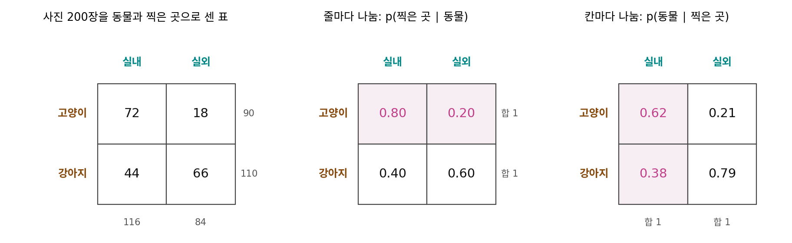

조건부 확률분포: p(a∣b) 와 p(b∣a)
이 장의 물음
휴대폰 사진첩에 고양이 사진을 올리면 앱이 사진 아래에 「고양이」라고 적는다. 그림 생성 앱에 「고양이」라고 적으면 앱이 고양이 사진을 한 장 그려 준다. 앞의 앱은 사진을 받아 낱말을 내놓고, 뒤의 앱은 낱말을 받아 사진을 내놓는다. 그런데 두 앱의 논문을 펴 보면 둘 다 같은 꼴로 적혀 있다. 글자 둘 사이에 세로 막대 하나를 세운 꼴이고, 두 논문은 막대 양쪽의 자리만 서로 바꿔 놓았다.
자리만 바꿨을 뿐인데 하나는 휴대폰 안에서 순식간에 돌고, 다른 하나는 큰 그래픽 카드를 몇 초씩 붙잡는다. 이 장은 다음 물음을 따라간다.
- 세로 막대의 오른쪽과 왼쪽에는 각각 무엇이 놓이고, 자리를 바꾸면 값이 얼마나 달라지나?
- 「병이 있으면 검사가 양성일 확률」과 「검사가 양성이면 병이 있을 확률」을 섞어 읽으면 어떤 일이 생기나?
- 사진이 주어졌을 때의 라벨과, 라벨이 주어졌을 때의 사진은 왜 다루기가 이렇게 다를까?
조건부 확률: 아는 것을 세로 막대 오른쪽에
사진첩에 고양이와 강아지 사진이 200장 있다. 「실내」 앨범을 열었더니 고양이가 유난히 많아 보인다. 이 느낌을 숫자로 말하려면 두 가지로 물을 수 있다. 「고양이 사진 가운데 몇 %가 실내에서 찍혔나?」와 「실내 사진 가운데 몇 %가 고양이인가?」. 말은 비슷하지만 하나는 고양이 사진만 모아 놓고 세고, 다른 하나는 실내 사진만 모아 놓고 센다. 어느 무리를 모아 놓고 셌는지를 적어 두지 않으면 두 숫자는 쉽게 섞인다.
사진첩 표를 줄과 칸으로 자르기
200장을 동물과 찍은 곳으로 나눠 세면 아래 표가 된다.
| 실내 | 실외 | 합 | |
|---|---|---|---|
| 고양이 | 72 | 18 | 90 |
| 강아지 | 44 | 66 | 110 |
| 합 | 116 | 84 | 200 |
「고양이 사진 가운데 실내 비율」은 고양이 줄만 남기고 그 줄 안에서 다시 나눈다. 72 ÷ 90 = 0.80. 「실내 사진 가운데 고양이 비율」은 실내 칸만 남기고 그 칸 안에서 다시 나눈다. 72 ÷ 116 = 0.62. 두 계산의 분자는 같은 72장이다. 다른 것은 분모, 곧 무엇을 이미 안다고 보고 그 무리만 남겼느냐다. 200장 전체로 나눈 72 ÷ 200 = 0.36은 「고양이이면서 실내」일 확률로, 줄도 칸도 자르지 않은 값이다.
이렇게 이미 아는 사실 하나로 무리를 좁히고, 좁힌 무리 안에서 다시 잰 확률을 조건부 확률 (아는 것 안에서 다시 잰 확률 / conditional probability)이라 한다. 「고양이라는 것을 알 때 실내일 확률」을 p(실내 ∣ 고양이)로 적는다. 세로 막대 「∣」의 오른쪽은 이미 아는 것(조건), 왼쪽은 묻는 것이다. 「고양이가 주어졌을 때 실내의 확률」이라고 읽는다. 둘을 함께 묻는 「고양이이면서 실내」는 쉼표로 p(고양이, 실내)라 적고 결합 확률이라 부른다.
식은 표에서 한 일을 그대로 적은 것이다. 분자와 분모를 둘 다 전체 200으로 나누어 두었을 뿐, 72 ÷ 90 과 (72/200) ÷ (90/200)은 같은 값이다.
조건 하나에 분포 하나
조건 b를 고양이로 고정하고 a를 실내·실외로 바꿔 가며 적으면 0.80, 0.20이다. 합이 1이다. 줄 하나를 잘라 다시 나누었으니 당연하다. 이렇게 조건 하나를 고정했을 때 묻는 쪽의 모든 값에 걸친 확률의 묶음을 조건부 분포라 하고 p(a ∣ b)로 적는다. 조건이 둘(고양이, 강아지)이면 조건부 분포도 둘이다. 표를 줄로 자르면 줄마다 분포가 하나씩 나오고, 칸으로 자르면 칸마다 하나씩 나온다.

가운데 표는 줄마다 합이 1이고 칸마다는 아니다. 오른쪽 표는 거꾸로다. 그래서 표를 받으면 먼저 「어느 쪽으로 더해 1이 되는가」를 보면 어떤 조건부 분포가 적혀 있는지 알 수 있다.
ML에서: 분류기가 내놓는 줄 하나
고양이·강아지 분류기는 사진 한 장 x를 받아 소프트맥스 출력 두 개를 내놓는다. 예를 들어 (0.93, 0.07). 합이 1이고, 사진이 이미 주어진 상태에서 라벨을 묻는다. 위 표의 말로 하면 「사진」이라는 조건으로 자른 줄 하나, 곧 p(y ∣ x)다(y는 라벨). 사진첩 표는 줄이 둘뿐이었지만, 사진을 조건으로 쓰면 줄이 사진 수만큼 생긴다. 분류기는 그 줄들을 표로 적어 두는 대신, 사진을 받을 때마다 그 사진의 줄을 계산해 내놓는 함수다.
문제 1. 카페 주문표
학교 앞 카페가 하루 동안 받은 주문 120건을 세었다. 오전 커피 54건, 오전 차 6건, 오후 커피 36건, 오후 차 24건이다. (가) 오전에 들어온 주문이 커피일 확률은? (나) 커피 주문이 오전에 들어왔을 확률은? (다) 사장님이 「오전 손님은 90%가 커피를 마신다」는 말을 듣고 「그럼 커피 재료는 90%를 오전에 준비해야겠다」고 했다. 맞는가?

(가)는 오전 주문만 보면 돼요. 오전 60건 가운데 커피 54건이니 0.9요.

(나)는 커피 90건 가운데 오전 54건이니 0.6이야.

둘 다 분자가 54예요. 그런데 왜 답이 달라요?
분모가 달라서요. (가)는 오전 60건으로, (나)는 커피 90건으로 나눴어요.

그럼 (다)의 사장님은 어느 쪽을 들었고, 어느 쪽이 필요했어요?

들은 건 p(커피 ∣ 오전) = 0.9이고… 재료를 언제 준비하느냐는 커피를 이미 안다고 보고 시간을 묻는 거니까 p(오전 ∣ 커피) = 0.6이 필요해요. 90%가 아니라 60%만 오전에 준비하면 되네요.

오후에도 커피가 36건이나 나가는데, 오전 손님 비율만 보면 그게 안 보이는구나. 오후 손님은 60%만 커피를 마셔도 오후 손님 자체가 60명이니까.
조교님이 「제출한 사람 중 90%가 만점」이라고 했는데, 알고 보니 제출한 사람이 열 명뿐이었던 거랑 같네요. 무엇으로 나눴는지를 먼저 물어야 해요.
문제 2. 줄로 자를까, 칸으로 자를까
두 값을 갖는 a(a₁, a₂)와 b(b₁, b₂)의 결합 확률이 p(a₁, b₁) = 0.30, p(a₁, b₂) = 0.10, p(a₂, b₁) = 0.15, p(a₂, b₂) = 0.45 이다. (가) p(b ∣ a₁)과 p(a ∣ b₁)을 구하라. (나) p(a₁ ∣ b₁)과 p(a₁ ∣ b₂)를 더하면 1인가? (다) 결합 확률표를 잃어버리고 p(b)와 p(a ∣ b)만 남았다. 표를 되살릴 수 있는가?
(가)는 줄 a₁ = (0.30, 0.10)을 줄의 합 0.40으로 나누면 p(b ∣ a₁) = (0.75, 0.25). 칸 b₁ = (0.30, 0.15)를 칸의 합 0.45로 나누면 p(a ∣ b₁) = (0.667, 0.333).
(나)는 0.667에다 b₂ 칸의 0.10 ÷ 0.55 = 0.182를 더하면 0.848이네요. 1이 안 되는데요, 계산이 틀렸나?
계산은 맞아요. 그 두 값은 각각 어느 분포에 들어 있어요?

0.667은 b₁ 칸의 분포, 0.182는 b₂ 칸의 분포에 있어요. 서로 다른 분포에서 하나씩 꺼내 더한 거네요.
합이 1이 되는 건 같은 조건 안에서 묻는 쪽을 다 더할 때뿐이구나. 세로 막대 오른쪽을 고정하고 왼쪽만 바꿔야 해. 오른쪽을 바꿔 가며 더하는 건 뜻이 없어.
(다)는요?
식을 뒤집으면 p(a, b) = p(a ∣ b) p(b)니까 칸마다 곱하면 돼요. 0.667 × 0.45 = 0.30, 0.182 × 0.55 = 0.10. 네 칸 다 돌아와요.
그럼 p(a ∣ b)만 있으면요?
그건 칸마다 비율만 있고 칸의 크기를 모르니까 안 돼. 해석학에서 방향만 알고 길이를 모르는 벡터랑 같아.
문제 3. 분류기 출력 네 줄
고양이·강아지 분류기에 사진 네 장을 넣었더니 (고양이, 강아지) 확률이 (0.92, 0.08), (0.15, 0.85), (0.60, 0.40), (0.05, 0.95)로 나왔다. (가) 넷을 표로 쌓으면 합이 1인 것은 줄인가 칸인가? (나) 「고양이」 칸 넷을 더한 1.72는 확률인가? (다) 네 장이 사진첩에서 고르게 뽑은 표본이라면, 칸마다 평균 낸 값은 무엇을 어림하는가?
(가)는 줄이에요. 사진 한 장마다 합이 1이니까요. (나)는… 1을 넘으니 확률은 아니죠. 그래도 1.72장쯤 고양이라는 뜻 아닐까요?
그 1.72는 몇 장 가운데 1.72예요?

네 장 가운데요. 확률로 만들려면 4로 나눠야 해요. 0.43이요.
그게 (다)구나. 사진마다 p(고양이 ∣ 사진)을 구하고 사진들에 대해 평균 내면, 사진 조건을 지운 p(고양이)가 돼. 문제 2에서 칸마다 곱해서 더하면 줄의 합이 나오던 거랑 같은 계산이야. 여기서는 사진을 고르게 뽑았으니 곱하는 무게가 다 4분의 1이고.

맞아요. 조건부 분포를 조건의 분포로 평균 내면 조건이 없는 분포가 돌아와요. 분류기 출력을 시험 데이터 전체에서 평균 내 보면 모델이 라벨 비율을 어떻게 보고 있는지 알 수 있어요.
학과 사무실이 반마다 출석률만 보고 학과 전체 출석률을 낼 때, 반 인원으로 무게를 줘야 하는 거랑 같네요.